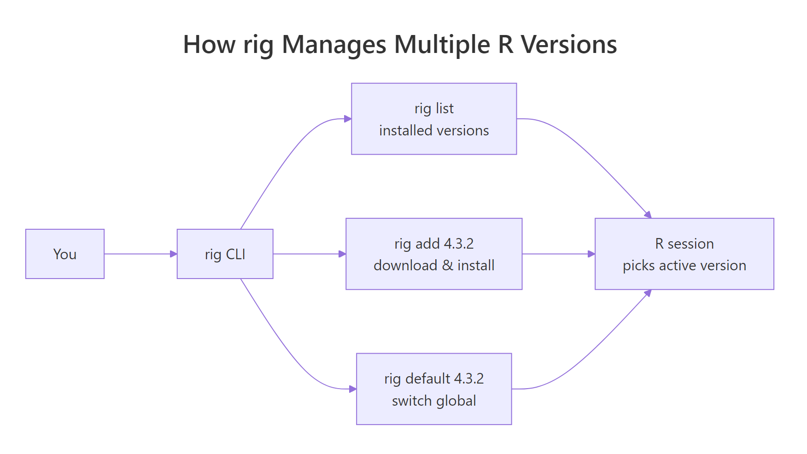
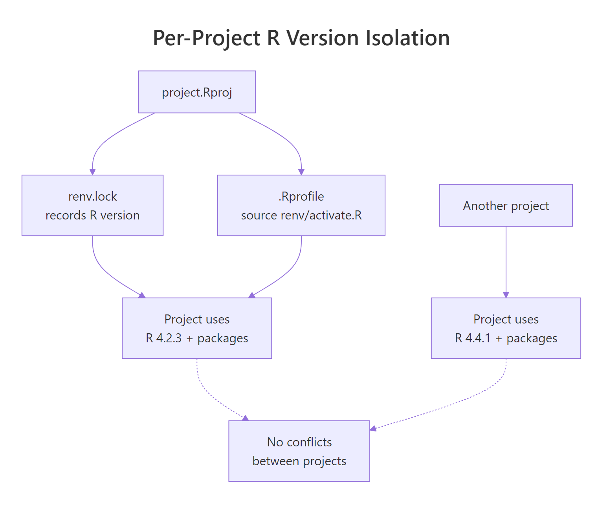

Run Multiple R Versions Side-by-Side (and Switch Without Breaking Anything)
Installing a new R release should never break a project that depends on an old one. This guide shows you how to keep several R versions installed at the same time, switch between them per project, and avoid the three mistakes that usually cause silent breakage.
One day a collaborator sends a project that needs R 4.2 because a key package has not been rebuilt for R 4.4 yet. Your machine has R 4.4 as the default. You install R 4.2 next to it and, without a plan, you now have two R versions fighting over PATH, two library folders, and unpredictable package loading. The fix is to stop treating R as one installation and start treating it as a managed set of versions, with each project pinned to exactly one of them.

Why do you need more than one R version installed?
There are three realistic reasons, and none of them are optional once you hit them.
Reproducibility. A paper, report or production pipeline that ran on R 4.1.3 last year should produce the same output this year. If you overwrite R 4.1.3 with 4.4.0, package loading can still succeed while numerical output subtly changes. A pinned R version removes that entire failure mode.
Package compatibility. rstan, some Bioconductor packages, and several niche GIS packages often lag behind the latest R release by months. A project that depends on them needs the last R version the binary was built for — not whatever is current.
Client and team constraints. A consulting client running R 4.2 on their server wants code you developed locally to behave identically. Matching their version locally prevents the "works on my machine" conversation.
What is the easiest way to install and switch R versions?
The answer on Windows, macOS and Linux is the same tool: rig, the R installation manager built by Posit. It installs multiple R versions into separate locations, exposes a single rig command to list, add, remove and set the default, and integrates with RStudio so each session knows which R it picked.
Install rig once, then use it for every future R install.
Once rig is managing your installs, opening a new terminal and typing R launches the default version. To check which one is active from inside R:
rig add. Mixing the two creates parallel registries and rig will stop seeing some installs.How do you switch R versions inside RStudio and VS Code?
Switching globally with rig default is fine for a quick test. The version you actually care about is the one a specific project uses — and both RStudio and Positron/VS Code let you set that per project.
RStudio. After running rig add, RStudio's launcher detects every installed R version on startup. In RStudio, go to Tools → Global Options → General → Basic → R version and pick the one you want. Hold Ctrl (or Cmd on macOS) while launching RStudio to get a version picker each time. The chosen version is remembered per project inside .Rproj.
Positron / VS Code. Open the command palette and search for R: Select Interpreter. Positron lists every R installation it can find, including the ones rig manages. Pick one, and the choice is saved in .vscode/settings.json for that project.
From the terminal. If you just want a one-off session with a specific R version without changing the default:
rig default command changes what R means in a fresh terminal. It does not retroactively change a running RStudio session. Close and reopen the IDE after switching defaults.How does renv lock each project to its R version?
rig handles the install side. renv handles the project side. Together they give you a setup where opening any project puts you on exactly the R version and exactly the package versions that project was built with.

When you call renv::init() inside a project, renv records the current R version in renv.lock and writes a project-local library under renv/library/. Every time you open that project, renv's activation script checks that the running R matches the lockfile and warns you if it does not.
Open renv.lock after init and you will see an R section near the top:
If you later open this project under R 4.2, renv prints a warning at session start telling you the R version does not match. That warning is your cue to rig default 4.4 (or pick 4.4 in the IDE) and relaunch. To sync a collaborator's machine to your exact state:
renv.lock and .Rprofile to git. Do not commit renv/library/ — it is big, platform specific, and rebuildable from the lockfile with one renv::restore() call.renv::restore() does not install R. It installs packages into the project library using whatever R is currently running. If you need a different R version, switch it with rig first, then run restore.What are the biggest mistakes when switching R versions?
These are the ones that bite almost every person the first time they try to run multiple versions.
Mistake 1: Sharing one library folder across versions. R cannot load a package compiled against R 4.2 in an R 4.4 session — you will see package 'xyz' was installed before R 4.0.0: please re-install it or segfaults. Every R version needs its own library. rig and renv both handle this for you as long as you do not override .libPaths() manually in your .Rprofile.
**Mistake 2: Forgetting that install.packages() compiles for the running R.* If you accidentally install a package under R 4.4, you cannot use that installed binary in R 4.2. Always launch the R version you intend to target first*, then install.
Mistake 3: Keeping too many old versions. Every extra R install is several hundred megabytes and another thing that can get out of date. Remove versions you no longer need with rig rm 4.1. You can always reinstall later.
Practice Exercises
Work through these in a fresh terminal. Each one should take less than five minutes.
Exercise 1. Install rig on your system and list every R version it currently sees. If the list is empty, add the latest release and the latest previous major.
Solution
Exercise 2. Create a throwaway project, switch to your non-default R version for that project only, and verify inside R that R.version.string reports the version you expect.
Solution
Exercise 3. Inside a new project on your default R version, run renv::init(), then open renv.lock in a text editor and locate the R.Version field. Confirm it matches R.version.string from the same session.
Solution
Complete example: pinning a real project to an older R version
Here is the end-to-end workflow for a project that must run on R 4.2 even though your default is R 4.4.
Summary
- Use rig as your only installer for R. It handles multiple versions cleanly on Windows, macOS and Linux.
rig default <ver>switches the global default; RStudio and Positron let you override per project.- Use renv inside each project to lock the R version and package versions into
renv.lock. - Never share a library folder across R versions — let rig and renv manage library paths.
- Remove unused R versions with
rig rm. You can always reinstall withrig add.
References
- rig on GitHub — official documentation
- renv package site
- Posit support: Using rig